How it works
There are two kinds of accounts. The game master runs the server and signs in as admin. Players join through an invite link, and their account only opens the game they were invited to.
A game holds its maps, its runners and the runs (contracts) the GM hands out. Everything updates live: when the GM opens a door, reveals a room or pays out a run, players see it within a second or two without reloading.
The rules follow Shadowrun 6th edition: dice pools with hits and glitches, the Wild Die, Edge Boosts, Physical and Stun condition monitors, and Karma for advancement.
For players
The top bar has everything you need during a session. Use the tabs to switch between Map, Character, Store, Runs and Wiki. On the right you can always see your health, Edge, Karma and nuyen.
Join a game
- Open the invite link your GM sent you. Each link works once and expires after a week.
- Pick a username and a password of at least 8 characters, then click Create account & join.
- You land on your character sheet. Next time, sign in on the main page with the same username and password.
You can change your password any time from the menu with your name in the top right corner.

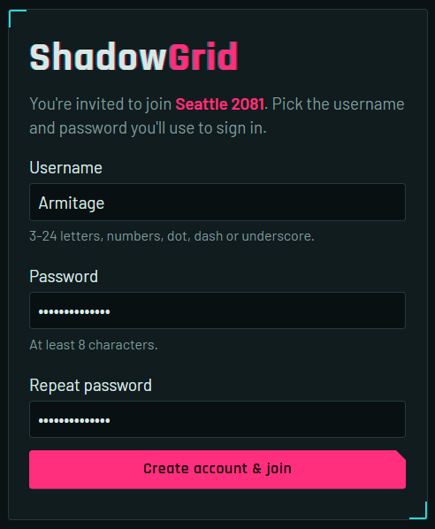
Build your runner
A new character starts as a draft. While it's a draft you can change anything freely, and everything you buy is refunded in full if you remove it. When you're happy with it, click Submit for approval. Your GM reviews it and either approves it or sends it back with a note.

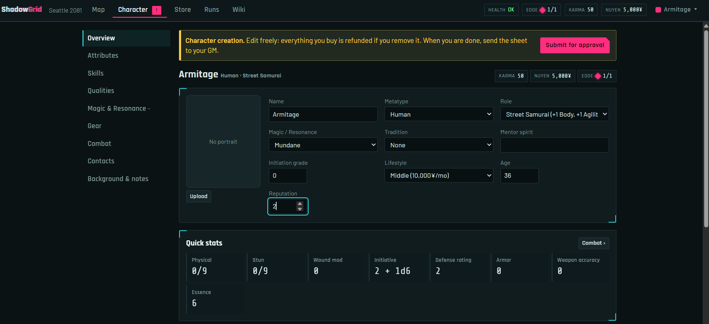
The sheet is split into sections in the left column:
- Overview: name, metatype, role, magic type, tradition, lifestyle and portrait. It also shows your quick stats and a history of every Karma and nuyen change.
- Attributes: set the base ratings. Metatype minimums, your role and your cyberware are applied automatically, and the Modifiers column shows where each bonus comes from. Auto roll attributes rolls a fresh set.
- Skills: rank and specialization for each skill. The pool on the right is what you'll roll: linked attribute + rank, +2 for a matching specialization.
- Qualities: positive qualities cost Karma and negative ones give Karma. Their effects (like +1 Body for Toughness) are applied for you.
- Magic & Resonance: spells, adept powers (with a Power Point counter) and foci (bonding costs Karma).
- Gear, Combat, Contacts and Background & notes.

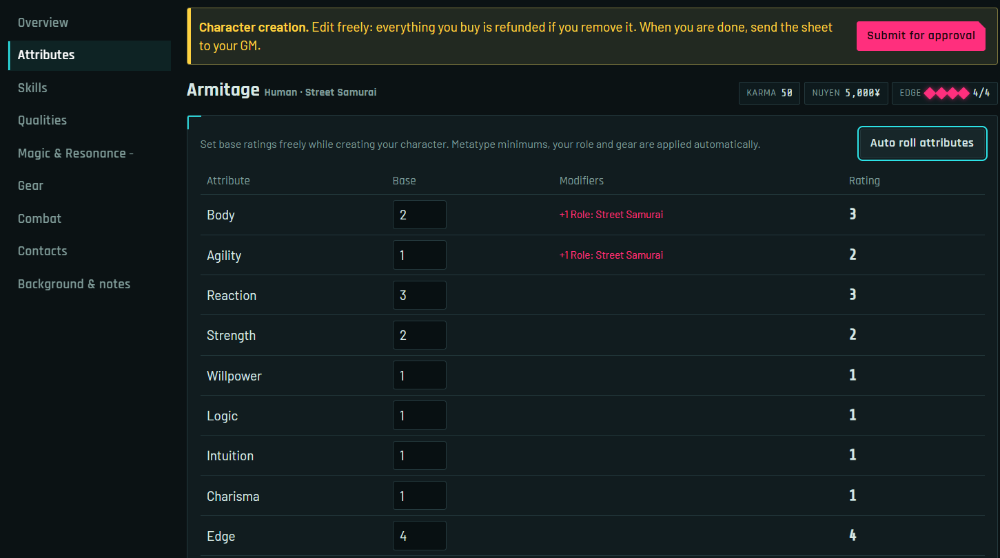

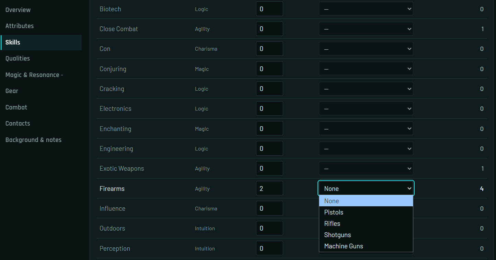

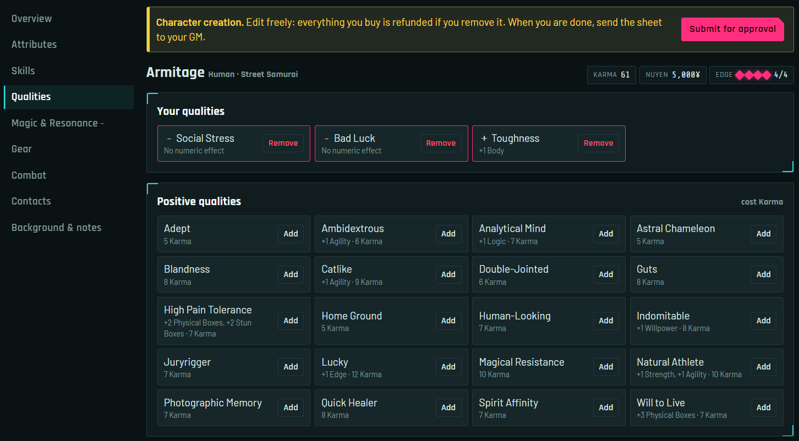

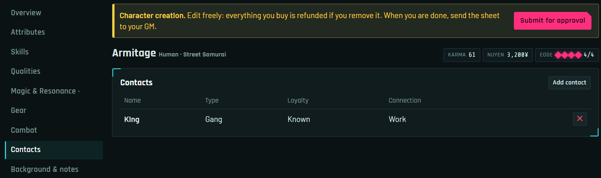
After approval, your sheet is locked to normal play. Attributes and skills go up by spending Karma (new rating × 5), a specialization costs 5 Karma and a new spell 5 Karma. Purchases are final. Metatype, role, magic type and qualities can only be changed by the GM.
Gear and the store
Everything from weapons to medkits is bought in the Store tab. Filter by category or search, and the price is taken from your nuyen. For something that isn't on the list, use Custom item…; custom items are marked so your GM can spot them.

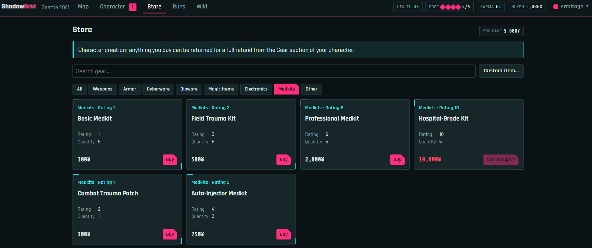
Your items appear in the Gear section of your sheet. Weapons and armor can be equipped or stored. Only equipped armor counts toward your Armor rating, and only equipped weapons appear in the dice roller. Medkits have a Use button.

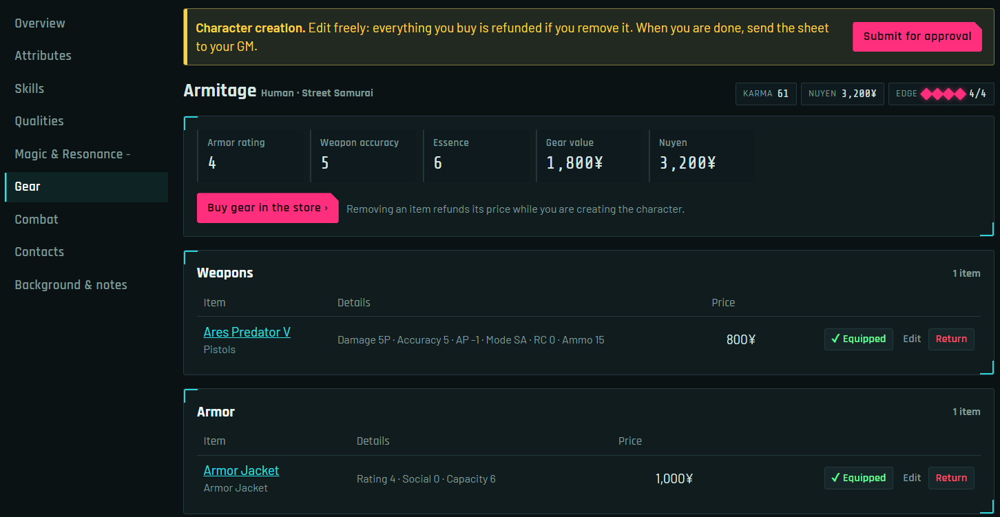
On the map
Once the GM places your token, the Map tab shows only what your runner has seen. The fog lifts as you explore, and closed doors block your sight.

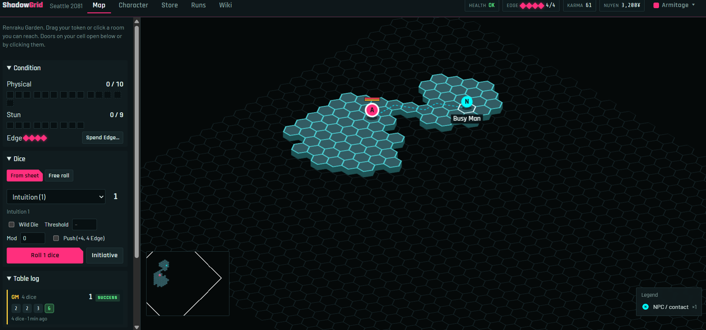
- Move: drag your token, click any room you can reach (a dotted line shows the path), or use the arrow keys.
- Doors: the buttons in the sidebar open the doors next to you. You can also click a door on your own cell. Locked doors need the GM.
- Travel: standing on a stairway or portal shows a Travel button that takes you to the next map.
- Ping: double-click a cell to flash it for the whole table.
- View: Isometric view in the sidebar switches between the tilted view and a flat top-down one.
- Damage: click the boxes of your Physical and Stun monitors to mark damage you take.
Rolling dice
The roller is in the map sidebar and in the Combat section of your sheet. Pick a pool from your sheet: a skill, a weapon, a spell, Defense, Damage resistance and so on. The roller shows how many dice that is and why. Your wound modifier is applied automatically.
- Wild Die: on a 5 or 6 it counts as 3 hits; on a 1 your 5s don't count.
- Threshold: the hits you need. The result says SUCCESS or FAILURE, and shows net hits.
- Push: spend 4 Edge before rolling to add your Edge rating to the pool, with 6s exploding.
- Free roll: any number of dice, for anything that isn't on your sheet.
Hits are green and 1s are red: 63515. After rolling you can spend Edge on one boost for that roll. Click dice to select them, then choose the boost. Every roll appears in the table log for everyone.
Runs
The Runs tab lists the contracts the GM gave you, with their tasks and progress. Tasks marked * are mandatory. The GM ticks tasks as they happen, and when the run is closed your reward is added to your nuyen automatically.

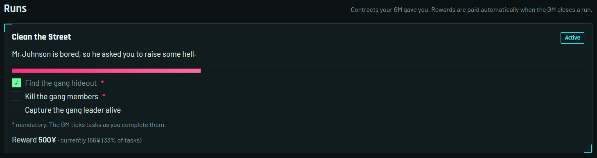
The Wiki tab has rules summaries and every item, spell, power and focus in the game, with a search box.
For the game master
Start a game
- Start the server with
python app.py. The first start prints the GM password in the console. Change it later withpython app.py set-password. - Sign in with the username
adminand that password. - Click New game and give it a name. Each game has its own maps, runners and runs.

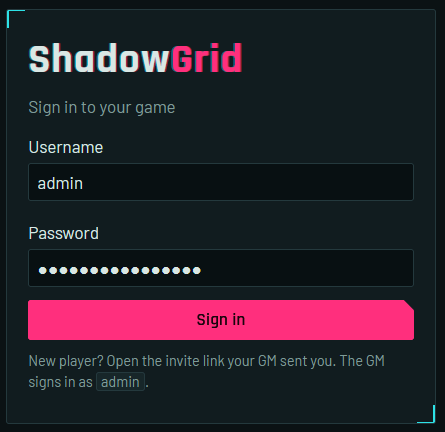

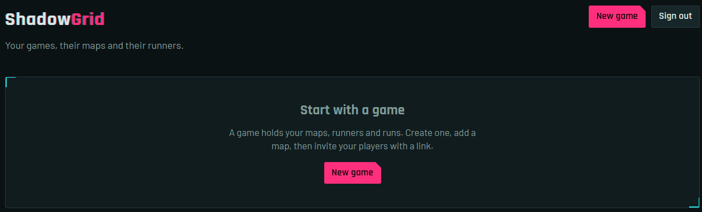
Build maps
On a game, use New map to draw one from scratch or Generate map for a procedural one. The generator offers rooms and corridors, winding passages and caves, on square or hex grids, with a live preview. The same seed always produces the same map.

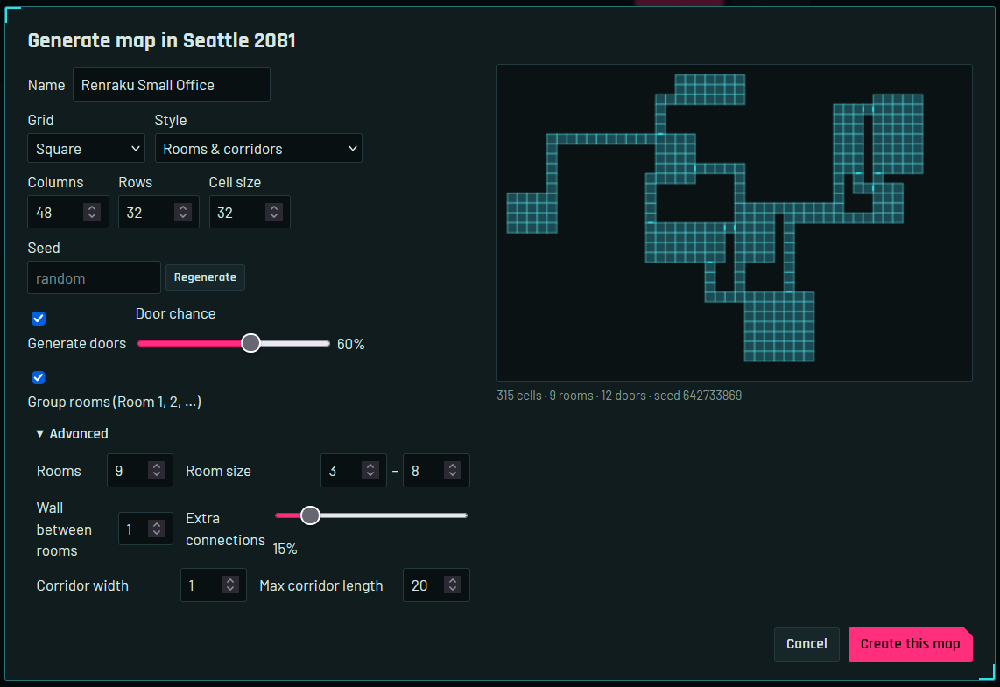

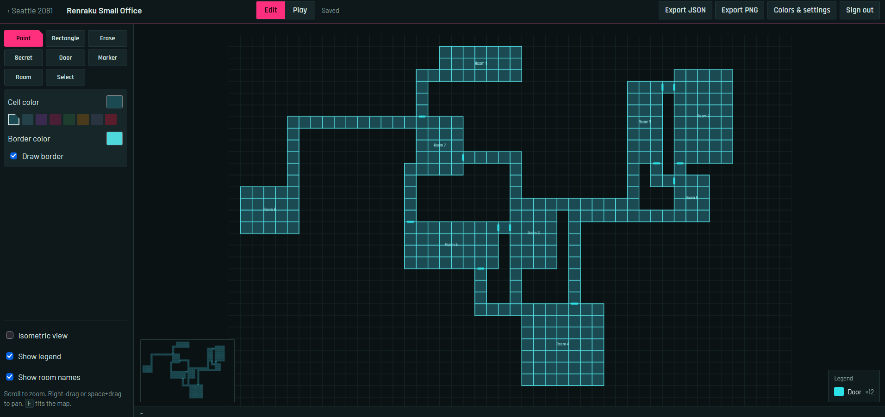
In Edit mode you have these tools:
- Paint, Rectangle and Erase draw rooms.
- Secret hides cells from the map station; players only find them by walking in.
- Door adds doors on cell edges.
- Marker places enemies, loot, NPCs, objectives and portals to other maps. Give an enemy a Body and Willpower and it gets real Physical and Stun condition monitors.
- Room names a group of cells.
Changes save automatically, and Ctrl+Z undoes them.
Invite players
Invite player creates a single-use link that is valid for 7 days. Send one link to each player. Unused links are listed on the game page under Invite links, where you can copy or revoke them.
Approve character sheets
A sheet a player submits shows a Waiting for approval tag on the home page, the game page and in the map editor. Open it with Review sheet.

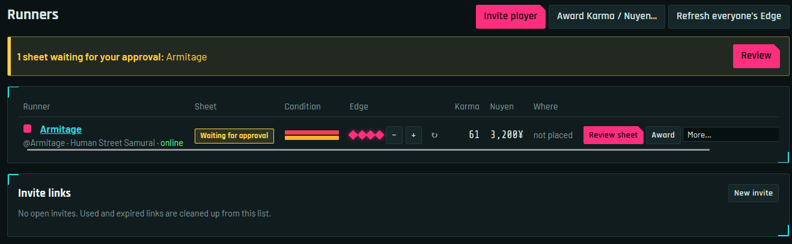

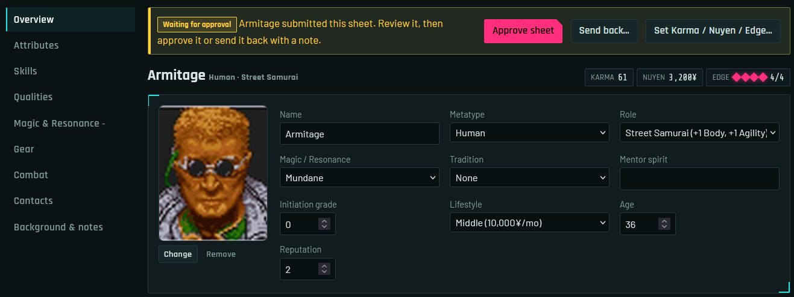
- Approve sheet locks the character into normal play and fills their Edge.
- Send back… returns it to draft with a note the player sees.
- As GM you can change anything on any sheet for free, at any time. Set Karma / Nuyen / Edge… sets exact values. Give an item… (in Gear) adds a store preset or a custom item without charging the player.
Run the session
Switch the map editor to Play mode during the game. It opens in the isometric view; toggle it with I.
- Viewing as: GM view shows everything. Pick a runner to see exactly what they see.
- Reveal and Hide: paint a runner's fog with a brush, or reveal a whole room. The same buttons exist under Everyone for the whole party.
- Doors: click to open or close, and Shift+click to lock.
- Token: place or move the selected runner's token.
- Markers: drag enemies around, then click one to mark damage on its condition monitor. Health bars show above every token and enemy, with KO, DYING and DEAD labels.
- Snapshots: save and restore the whole game state (positions, exploration and doors).
Give out runs
On the Runs tab, New run asks for a name, a reward per runner, a description the players see, the tasks and the runners who take the job.

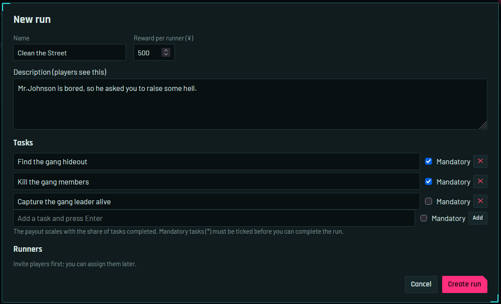
Tick tasks as they happen. The payout scales with the share of tasks done, and every mandatory task must be ticked before the run can be completed. Complete & pay… suggests the payout (you can change it) and pays it to each assigned runner. You can also abandon, reopen or delete a run.
Dice, rewards and Edge

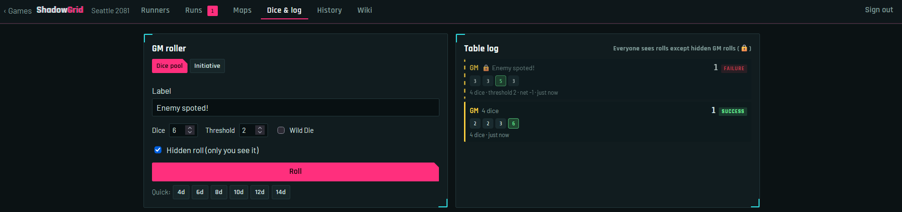
- Dice & log: roll a pool or initiative for NPCs. Tick Hidden roll to keep the result to yourself.
- Award Karma / Nuyen: give to one runner, several or everyone at once. Negative amounts take it away. Each award has a reason that the runner sees in their history.
- Edge: only the GM refreshes Edge. Use −, + and ↻ next to each runner, or Refresh everyone's Edge.
- History: every Karma and nuyen change in the game, from purchases to run rewards.
Rules reference
Dice
- A 5 or 6 is a hit.
- Glitch: more than half of the dice show 1. Critical glitch: a glitch with no hits.
- Wild Die: on a 5 or 6 it counts as 3 hits; on a 1, none of the 5s in the roll count.
- A skill you don't have rolls the attribute −1. A wound modifier of −1 die applies for every 3 boxes filled on each monitor.
Edge Boosts (one per roll)
| Edge | Boost | When |
|---|---|---|
| 1 per die | Reroll the selected dice | After rolling |
| 2 | +1 to one die | After rolling |
| 3 | Buy one automatic hit | After rolling |
| 4 | Reroll every failed die | After rolling |
| 4 | Add your Edge rating to the pool, 6s explode | Before rolling (Push) |
| 1 | +3 Initiative | When rolling initiative |
| 2 | Give an ally 1 Edge · negate 1 Edge of an opponent | Spend Edge… |
| 3 / 4 | Heal 1 box of Stun / of Physical | Spend Edge… |
| 5 | 2s count as glitches on a target's test · special effect | Spend Edge… |
You can hold at most 7 Edge. The GM refreshes it, usually at the start of a session.
Condition monitors
- Physical: 8 + Body ÷ 2. Stun: 8 + Willpower ÷ 2, rounded up.
- A full Stun track knocks you unconscious, and further Stun overflows into Physical.
- A full Physical track means dying. You then have overflow boxes equal to your Body; past those the character is dead.
Advancement after approval
| Karma | For |
|---|---|
| new × 5 | Raise an attribute or a skill by one |
| 5 | A specialization |
| 5 | A new spell |
| Force × type | Bond a focus |
| 1 → 2,000¥ | Trade Karma for nuyen |
Keyboard shortcuts
Everyone on a map
| Scroll | Zoom |
| Right-drag, or Space + drag | Pan |
| F | Fit the whole map |
| I | Toggle the isometric view |
Players
| Arrow keys | Step one cell |
| C | Centre on your token |
| Double-click | Ping a cell for the table |
GM map editor
| Edit mode | P paint · R rectangle · E erase · S secret · D door · M marker · G room · V select |
| Play mode | P reveal · E hide · D doors · T token · M markers · V select |
| Tab | Cycle "viewing as" through the runners (Play mode) |
| Shift + click a door | Lock or unlock it |
| Ctrl + Z | Undo (Edit mode) |
| Esc | Close the inspector |